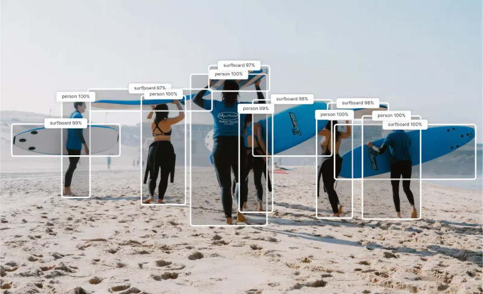

Quantized real‑time object detection optimized for mobile and edge. YoloV7 is a machine learning model that predicts bounding boxes and classes of objects in an image. This model is post‑training quantized to int8 using samples from the COCO dataset.
